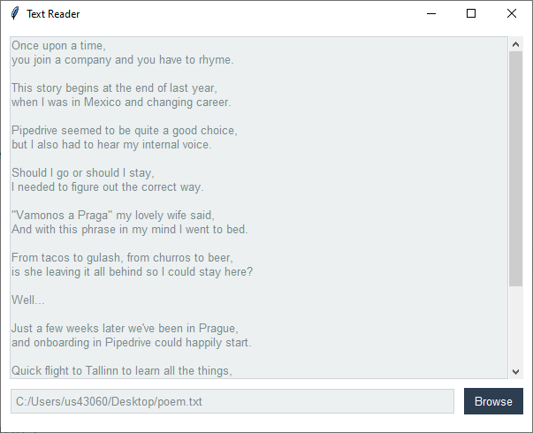

Text Reader¶
This application opens a text file and puts the data into a scrolled text widget.
Notice that I’ve used the Style.colors property to adjust the colors on the ScrolledText widget?
widget. This is handy when you want to make some customizations, but want to stay consistent with the theme color
palette.
Need to see the hex codes? Just print the colors property:
style = Style(theme='sandstone')
print(style.colors)
You’ll see this output in your console:
(('primary', '#3e3f3a'), ('secondary', '#8e8c84'), ('success', '#93c54b'), ('info', '#29abe0'), ('warning', '#f47c3c'), ('danger', '#d9534f'), ('bg', '#ffffff'), ('fg', '#3e3f3a'), ('selectbg', '#8e8c84'), ('selectfg', '#ffffff'), ('light', '#fdfcfb'), ('border', '#ced4da'), ('inputfg', '#3e3f3a'))

flatly theme¶
Run this code live on repl.it
import tkinter
from tkinter import ttk
from tkinter.scrolledtext import ScrolledText
from tkinter.filedialog import askopenfilename
from ttkbootstrap import Style
def open_file(text_area):
"""Prompt user for filename, open and populate text area and filepath fields"""
path = askopenfilename()
if not path:
return
with open(path, encoding='utf-8') as f:
text_area.delete('1.0', 'end')
text_area.insert('end', f.read())
window.setvar('filename', path)
# instantiate window and set title
style = Style()
window = style.master
window.title('Text File Reader')
# create a container for the widgets
frame = ttk.Frame(window, padding=10)
frame.pack(fill='both', expand='yes')
# Manually adjust tkinter widgets (not ttk) with theme colors available from ``Style.colors``
text_area = ScrolledText(frame,
highlightcolor=style.colors.primary, # color of highlight border when focused
highlightbackground=style.colors.border, # color of highlight border when not focused
highlightthickness=1) # thickness of highlight border
text_area.pack(fill='both')
# insert default text in text area
text_area.insert('end', 'Click the browse button to open a new text file.')
# filepath
filevar = tkinter.StringVar(name='filename')
ttk.Entry(frame, textvariable=filevar).pack(side='left', fill='x', expand='yes', padx=(0, 5), pady=10)
# browse button
button = ttk.Button(frame, text='Browse', command=lambda t=text_area: open_file(t))
button.pack(side='right', fill='x', padx=(5, 0), pady=10)
window.mainloop()
The poem used in this demonstration can be found here.